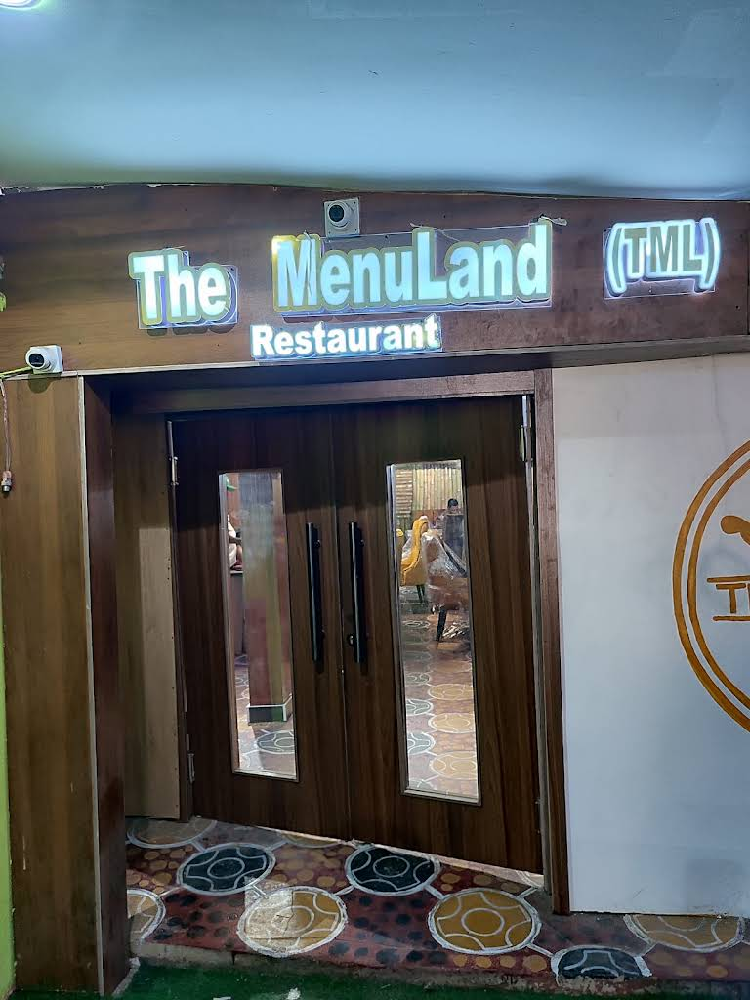

The experience
For lunch, dinner, and the in-between.
Whether you are catching up with friends or taking a quiet break, there is a seat waiting for you.
Restaurant in Owerri
Thoughtful meals, a welcoming room, and a reason to take your time.

From the restaurant
Photos from the restaurant’s Google Maps profile.
The experience
Whether you are catching up with friends or taking a quiet break, there is a seat waiting for you.
4.7 from 548 Google Maps reviews.
Plot 170 Ikenegbu Road, Owerri
Plan your visit
Use Google Maps for live directions and opening information before you set out.
LocationPlot 170 Ikenegbu Road, Owerri
Opening hoursCheck today's hours on Google Maps
A quick message away
Tell the team what you are looking for. Your message opens directly in WhatsApp so you can get a quick response.
0916 291 5533